Four Depths, One Surface
The Deep Weave does not produce healers. It produces organisms that have solved, through evolutionary pressure, the problem of keeping other organisms alive. The distinction matters. A healer is trained. A Deep Weave unit is built , by selection, by adaptation, by a biological logic that decided collective survival was worth specializing for entirely.
Four evolutionary lines define the current Weave. The Neotene Path runs through the axolotl lineage: beings who have arrested their own development at a state of maximum biological plasticity, growing gill plumes where necks should be and healing by rewriting the cellular template of whatever they touch back to an earlier, undamaged state. The Pelagic Path runs through medusozoan ancestry: translucent beings of compressed bio-electricity who drift rather than walk, whose pulsing bell-bodies broadcast healing signals across the entire field simultaneously.
The Lunar Path is the only aerial line the Weave has produced. Moth-hybrid women whose wings release compound-laden scales with every motion, transforming the air chemistry of the battlefield , healing dust for allies, drowsy confusion for enemies, silk cocoons for the critically wounded. And then there is the Nudibranch Path: the strangest and perhaps most effective of the four. These women absorb the damage and toxins directed at their allies , eat them, biologically speaking , then release everything they have stored as a single concentrated healing pulse. They become more powerful the more the enemy brings. They find this arrangement perfectly fair.
Active Roster
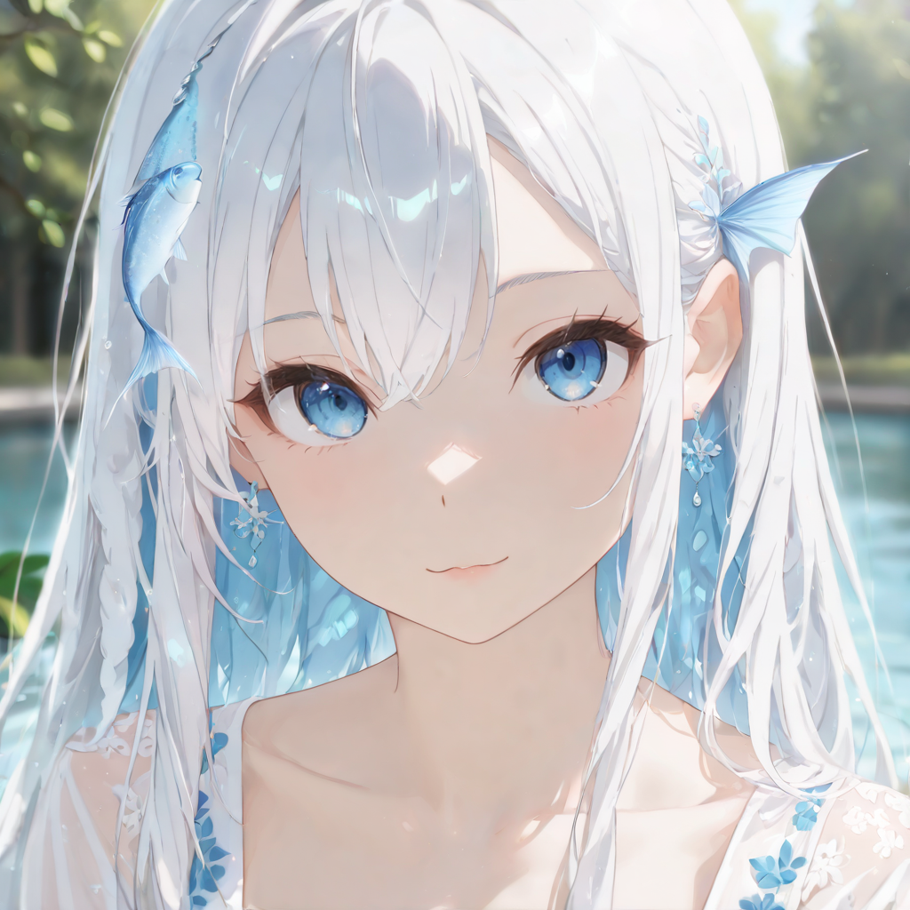
Pale Novice
A young woman at the earliest stage of aquatic biological divergence. Her skin has taken on a faint translucence at the extremities , not quite visible through, but suggesting it. Gill buds are forming along the jaw line: not yet functional, each one a small pearl-smooth swelling. She breathes slightly too slowly for her apparent size, as though her respiratory system is already negotiating with something other than air. Two evolutionary paths are viable inside her aquatic genome , one toward gill-based cellular memory, one toward medusozoan bio-electricity. Until the pressure selects, she drifts. She is already remarkably difficult to wound.
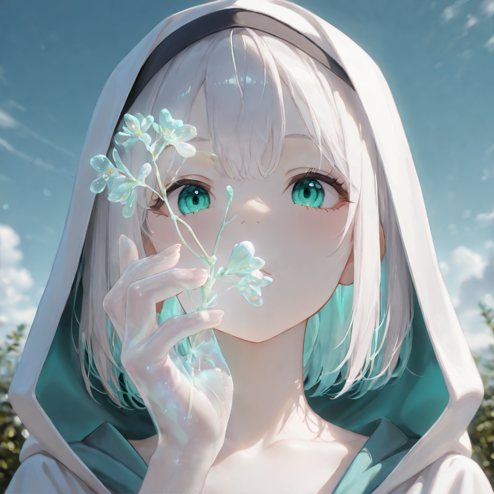
Vivid Novice
A young woman at the earliest stage of chromatic and aerial divergence. Her skin runs warm , patches of electric orange, deep violet, pale gold, shifting slowly as her chromatophore system learns to stabilize. Between her shoulder blades, two small wing buds have emerged: not yet functional, barely larger than her hands, already patterned. Along her forearms the first cerata nubs are growing , tiny, bright-tipped, curious. She has discovered she can absorb trace toxins through her skin without harm. She has not yet discovered what she will eventually do with them. Two evolutionary paths are open: one aerial, one chemical. She moves through the world touching things she probably shouldn't, with perfect impunity.
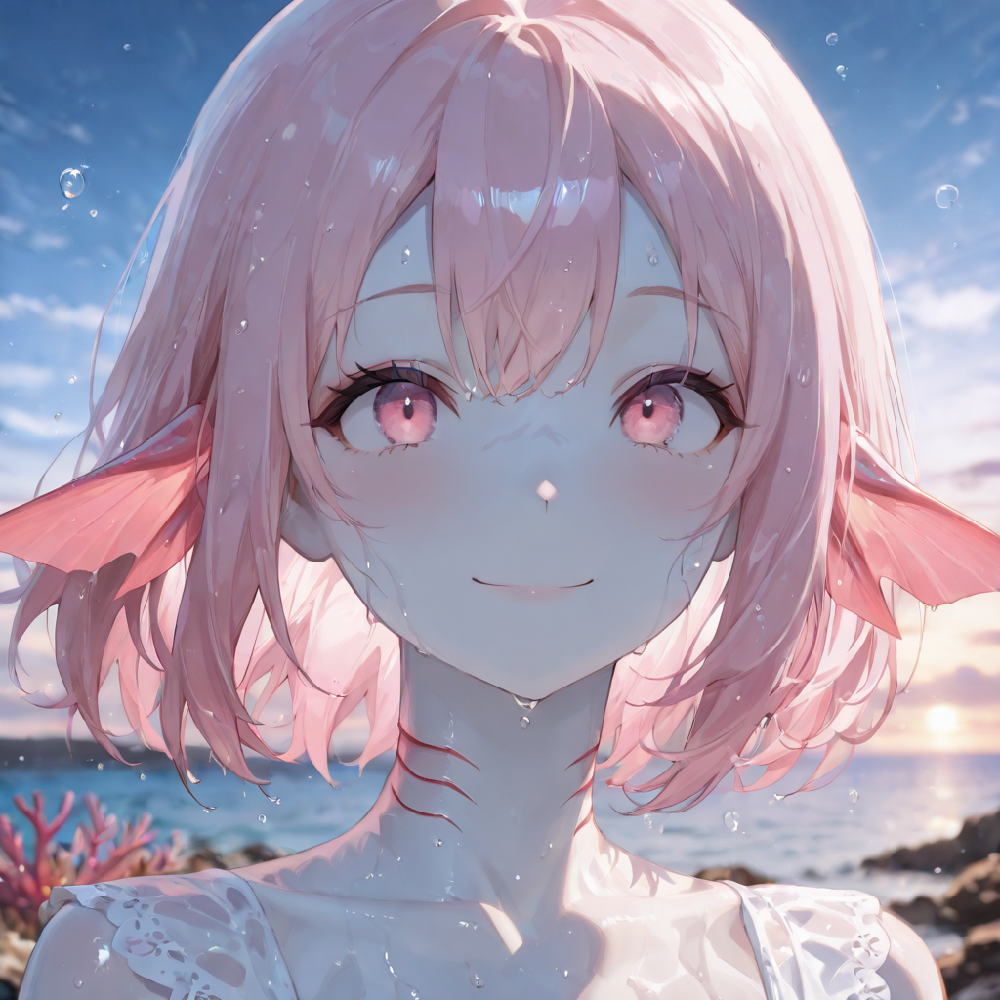
Gill Tender
Where a neck should be, three pairs of feathery external gills now frame her jaw , long, delicate plumes in pale rose and silver that fan outward when she breathes, each filament lined with receptor cells that read the blood chemistry of whoever is nearby. She has not lost her human appearance so much as added to it. She breathes for allies who cannot: in situations of smoke, toxin gas, or oxygen deprivation, her gill system can oxygenate the blood of anyone she is in physical contact with through dermal osmosis. Her eyes have become slightly larger than human-normal, with the gentle, preoccupied look of someone who is always reading data invisible to everyone else.
Bell Drifter
From the waist up: a woman with translucent-edged skin through which bioluminescent veins are faintly visible. From the waist down: a pulsing medusa bell, two meters across when fully expanded, that propels her by rhythmic contraction. She does not walk. She drifts, with a precision that looks deceptively like floating. The bell's underside trails thin tentacle threads , not for grasping, but for conducting: bio-electric impulses she uses to stabilize the nervous systems of nearby allies, suppressing pain signals and resetting shock responses in soldiers who would otherwise be incapacitated.
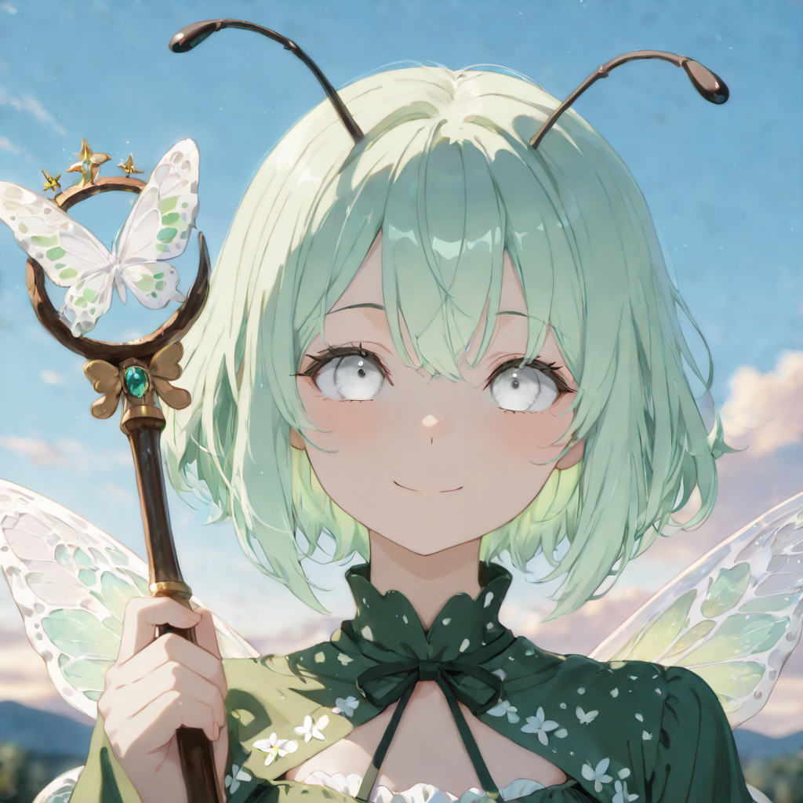
Scale Moth
Her wings emerged in early adolescence and she has never considered them unusual. They are large , three meters tip to tip at full extension , pale grey-white with a cryptic patterning that shifts subtly in dim light, never quite resolving into a clear shape. Each wing is covered in microscopic scales that detach in her wake carrying compound payloads: most produce a gentle healing response in biological tissue, a few produce progressive drowsiness in enemies who inhale them. Her antennae can read biological stress signals , fear, pain, cellular distress , at up to fifty meters. Her compound eyes are large and dark and give her a permanent expression of gentle, all-encompassing attention.
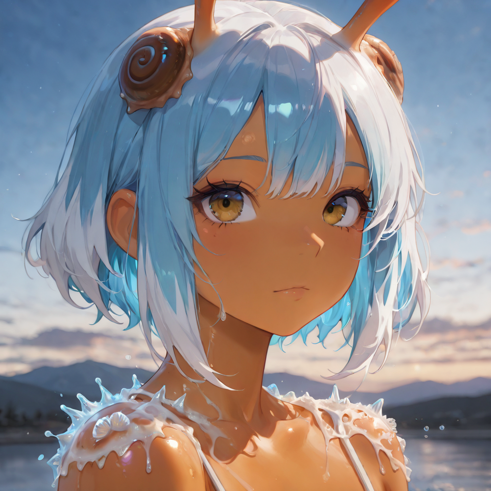
Petal Nudis
Her skin is extraordinary: electric orange fading to white at the extremities, with short cerata filaments along her shoulders and the backs of her arms , the same structural projections that line the dorsal surface of nudibranch sea slugs, each one tipped with a chemoreceptor cluster. She is the Coalition's most effective toxin-cleanse unit. What she does is entirely biological , she identifies harmful compounds in nearby tissue through her dermal receptors and absorbs them through skin contact, processing them internally through a specialized gut biome that has never yet encountered a toxin it could not metabolize. She does not neutralize what she absorbs so much as eat it. The expression on her face during this process is one of mild concentration.
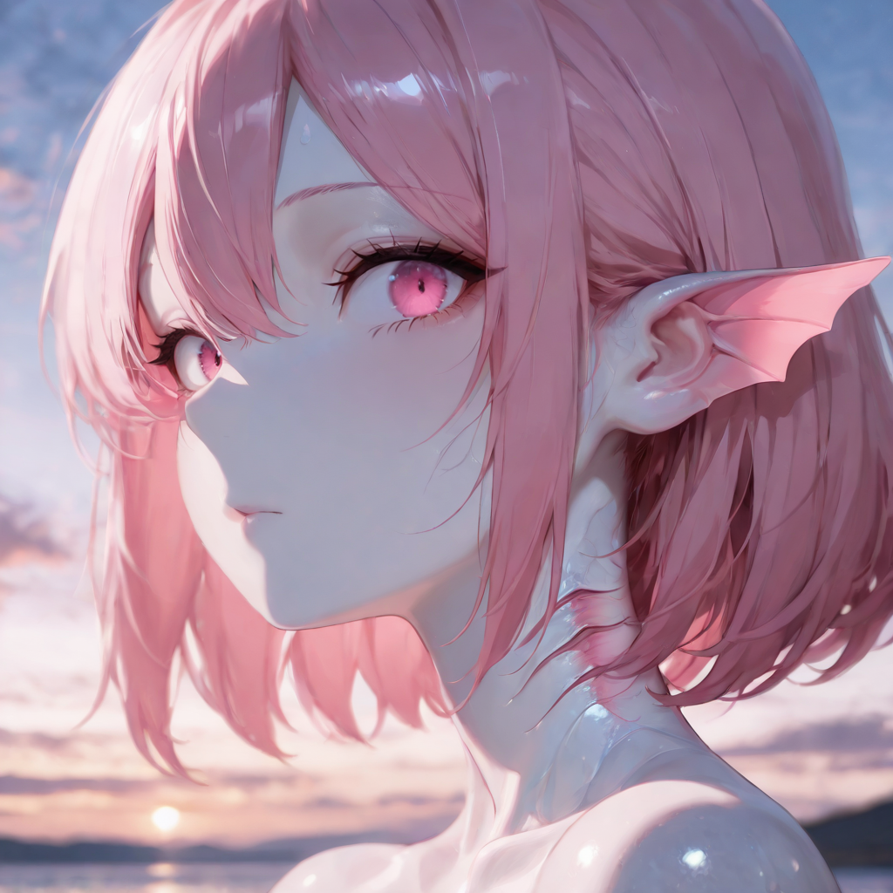
Neotene Matron
The gill plumes now span nearly a meter on each side , impossibly elaborate branching structures that have become her primary sensory organs as well as her healing apparatus. She has stopped aging. Not immortality, exactly, but a biological choice her body made at some point without consulting her. She looks perpetually young. Her healing is no longer contact-based: she breathes out a fine oxygenated mist that permeates the immediate area, accelerating cellular repair in every allied organism within range. Her skin is faintly damp and slightly luminescent. Enemy units with respiratory systems find themselves involuntarily breathing slower in her presence, which is a problem for them.
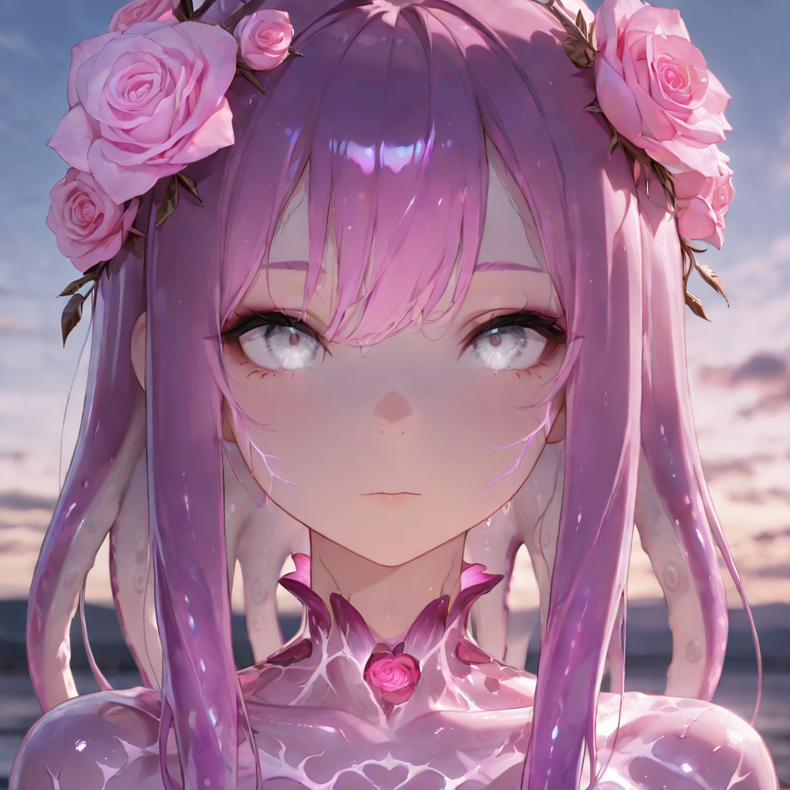
Phosphor Veil
Her skin has become fully translucent. The bioluminescent network inside her is now a map of her own nervous system, visible from the outside, constantly shifting color with her internal state , cool blue when focused, gold when healing, white when alarmed. She exists inside a bio-electric field that extends three meters in all directions, detecting and influencing the nervous activity of every creature within range. Allies experience accelerated hemostasis , wounds stop bleeding as though the body has been told, clearly and firmly, that the emergency is being handled. Enemies experience micro-seizures in their peripheral nervous system. Neither group can easily identify the source.
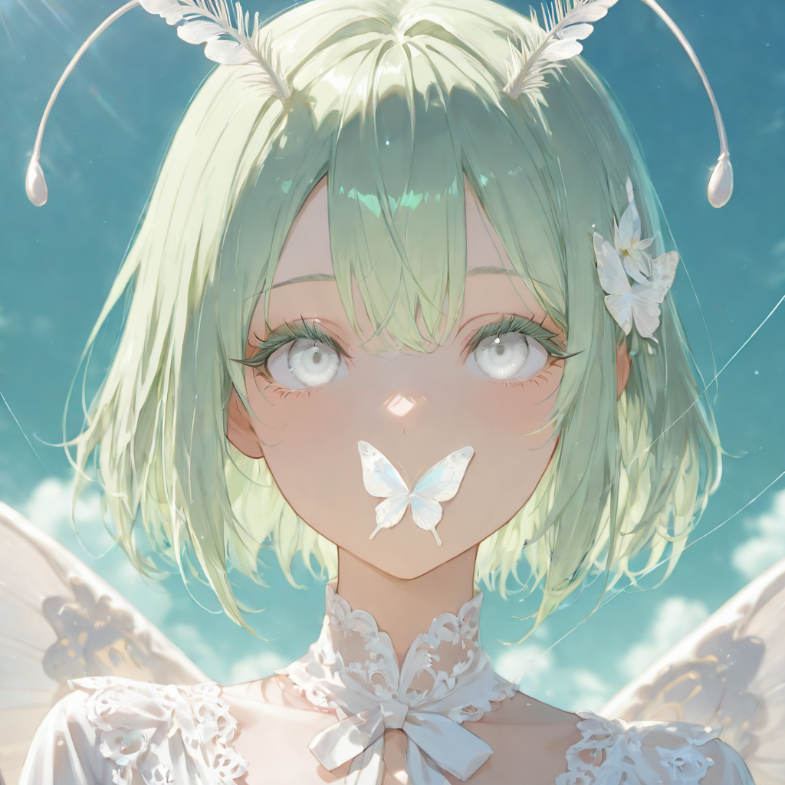
Cocoon Keeper
She produces silk , not from a single spindle gland, but from specialized glands distributed across her forearms, abdomen, and the leading edge of her wings, each producing a filament with different biological properties. In combat, she uses this silk to wrap critically wounded allies in rapid field cocoons: biologically active enclosures that maintain temperature, suppress infection, accelerate clotting, and buy hours of recovery in seconds of real time. The silk itself is semi-opaque and slightly luminous, so a field wrapped in her work glows faintly silver. She is always surrounded by drifting threads still attached to their glands, each one waiting.
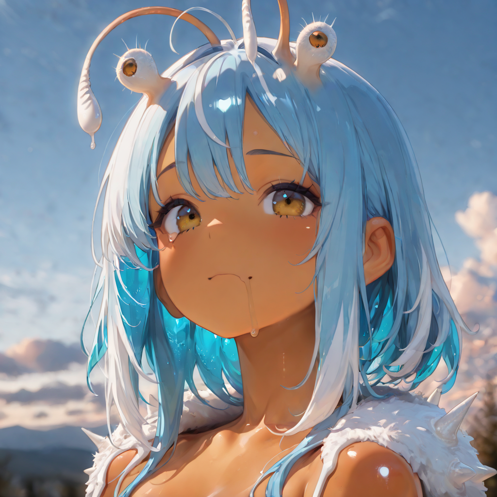
Chromodoris
The cerata filaments have multiplied and lengthened, covering her from shoulders to wrists in a dense fringe of chemosensory probes, each one a different color , not decorative but structural: different pigments indicate different absorption specializations. She has become a biological storage system. Every toxin absorbed, every trauma pulled from an ally's tissue, every harmful compound collected , she holds it all, transformed, inside her own specialized cellular architecture. Then she releases it: a single pulse that converts everything stored into an area healing wave. What was damage becomes repair. What was poison becomes medicine. She can do this once every few minutes. She is always full.
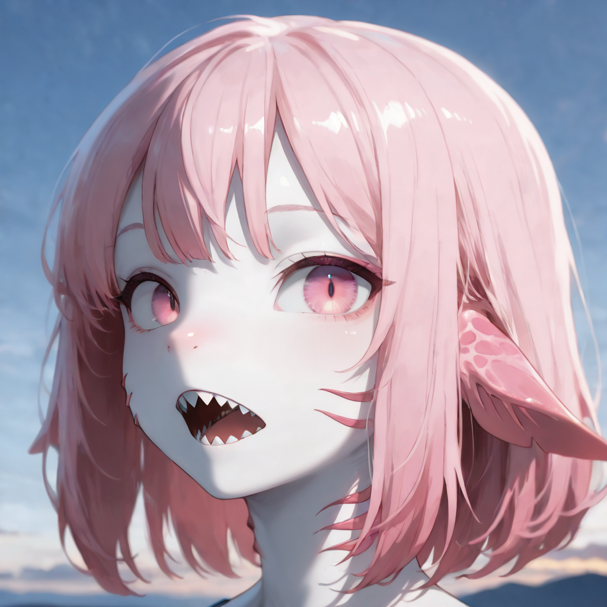
Eternal Larva
She should not look like this. The evolutionary logic of the Neotene Path runs toward a paradox: the further she evolves, the younger her body configuration becomes , not the age of the individual, but the developmental stage, held permanently at a state of maximum biological plasticity. Her gill plumes are enormous, her eyes fill most of her face, her proportions are subtly wrong in the way that creatures with extreme neoteny are always subtly wrong. She is the most precise healer the Coalition fields. In her presence, damaged tissue does not just repair , it reverts to an earlier, undamaged cellular template, as though her biological field can rewind the clock. She finds this all very interesting.
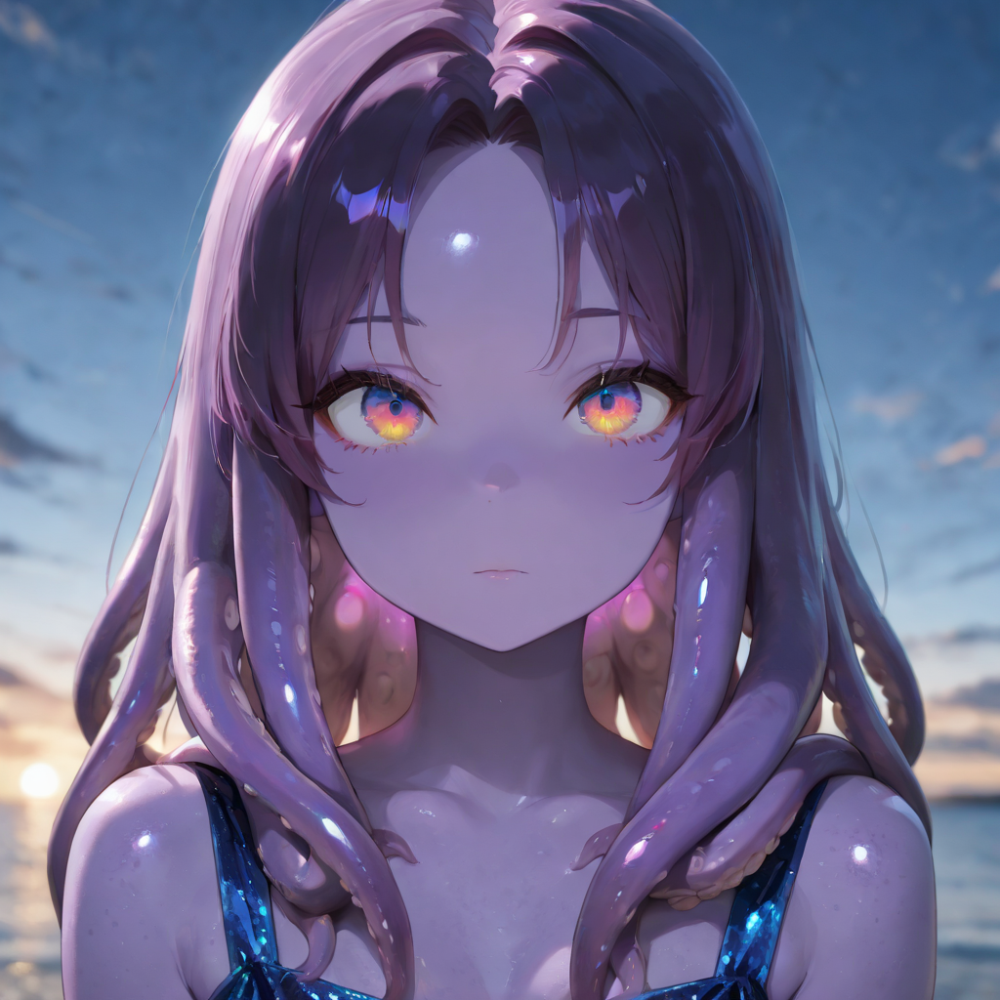
Pelagic Crown
Her upper body is still recognizably humanoid, but the bell has become vast , six meters in diameter when fully extended, constantly pulsing, the largest single biological structure any individual member of the Deep Weave generates. The bioluminescent network has become something between a nervous system and a broadcast array: she can synchronize the autonomic responses of every allied organism on the field simultaneously. When she pulses, everything heals at once. The electric field she generates at full output is lethal to unprotected enemies within close range. She does not need to move. She radiates.
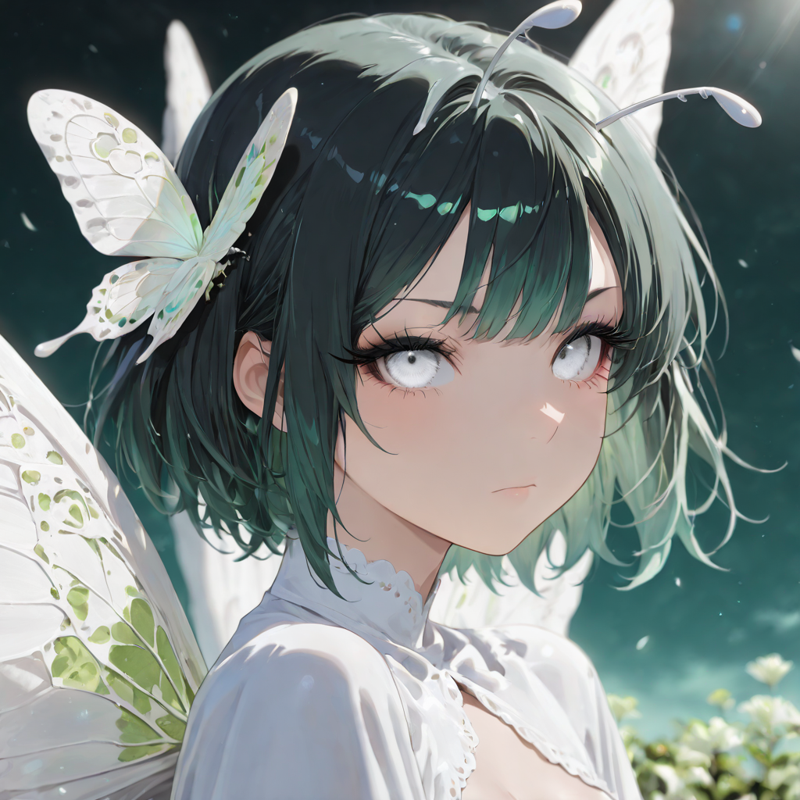
Dust Saint
Her wings are enormous , five meters tip to tip , and every motion she makes releases a visible cascade of scales into the air. She has spent years learning to control the compound payloads in each scale type: clotting agents, cell-repair accelerants, nerve signal modulators, sleep compounds, pheromone amplifiers. In combat, her presence transforms the air chemistry of the entire field. Allies fight at elevated biological performance; enemies find their perception narrowing, reflexes slowing, aggression dulling. She moves through the battlefield slowly and deliberately, always knowing exactly what the air needs and providing it. Her wing strokes leave trails of faint silver luminescence that linger for several seconds after she has passed.
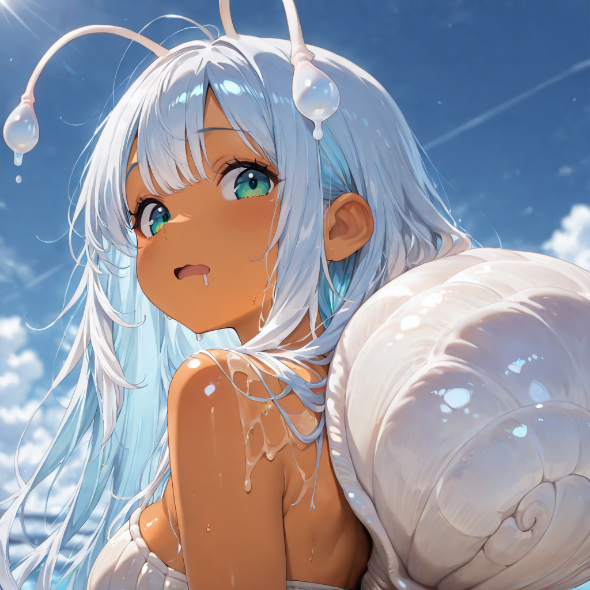
Stolen Fire
The nudibranch ability to steal and repurpose the defenses of whatever it consumes has reached its evolutionary apex. She has absorbed so many different biological systems over her career that her own body is an archive: inside her tissue are dormant copies of every defensive mechanism she has ever encountered , calcification responses, bio-electric pulses, regenerative sequences, venom neutralization libraries, pheromone broadcast arrays. In combat, she takes whatever is being directed against the Coalition , toxin, electricity, biological attack, radiation , and mirrors it outward, amplified and inverted, as a concentrated healing force. She becomes more powerful the more dangerous the enemy is. The more they bring, the more she has to give back. She finds this arrangement perfectly fair.
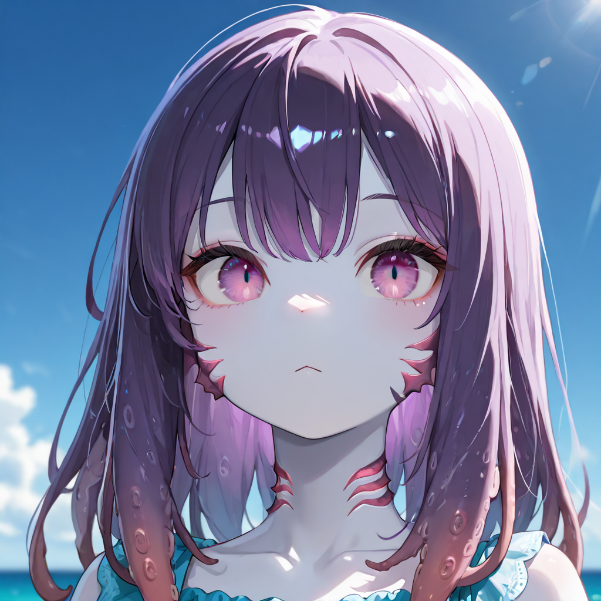
The Still Point
She is not large. This is the first surprise. The Neotene and Pelagic lines converge in a body that is approximately human-sized and apparently still. Her skin is fully translucent , the bioluminescent network beneath it visible at rest, shifting cool blue to gold as she works. Her gill plumes span nearly a meter on each side, continuously reading the biological state of everything within range. Below her waist: a medusa bell, collapsed at rest, that expands and pulses when she broadcasts. She does not move during combat. She settles, opens, and radiates.
Every allied nervous system within her field is continuously synchronized. Damaged tissue in range does not just repair , it reverts to an earlier cellular template, as though time in the wound runs backward. Enemies find their autonomic systems disrupted in ways that cannot be attributed to any identifiable source. She is aware of everything happening biologically within thirty meters at all times. Her expression is one of complete, undivided, slightly unsettling calm.
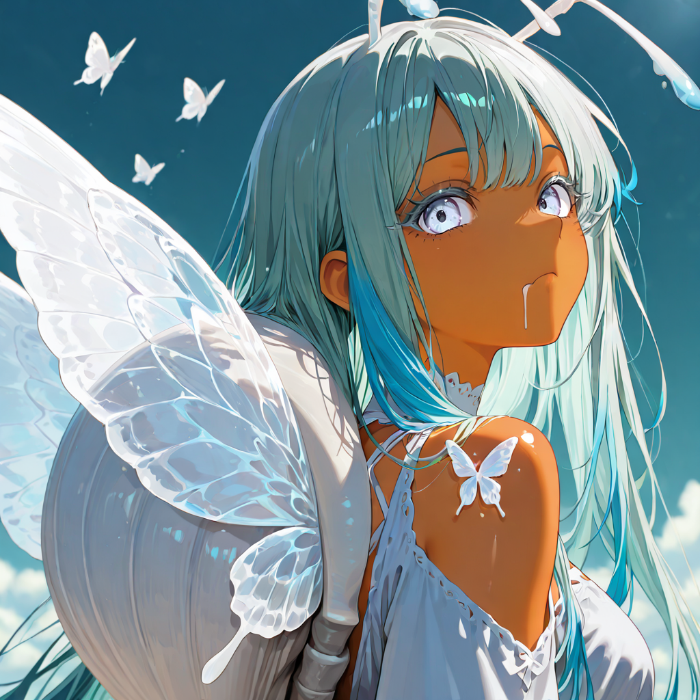
The Gilded Archive
Where the Still Point settles, the Gilded Archive moves. She is the Lunar and Nudibranch lines at full convergence: wings spanning seven meters when fully extended, every surface dense with pharmacologically loaded scales refined over years of absorbing and cataloguing biological attacks. Her cerata cover her from shoulders to elbows in a layered fringe of dozens of colors , each one a living archive of a different absorbed system. In combat she circles the formation slowly, banking on rising air, choosing her altitude with the deliberate patience of something that hunts by being patient rather than fast.
Each wing stroke releases a cascade of scales whose payload she selects in real time: clotting agents for the unit currently bleeding, nerve modulators for the one in shock, anti-toxin compounds for whatever the enemy is broadcasting. She has absorbed enough biological weapons over her career that no new attack surprises her. She has already catalogued it, converted it, and is currently releasing it as medicine. She finds the enemy's best efforts useful.